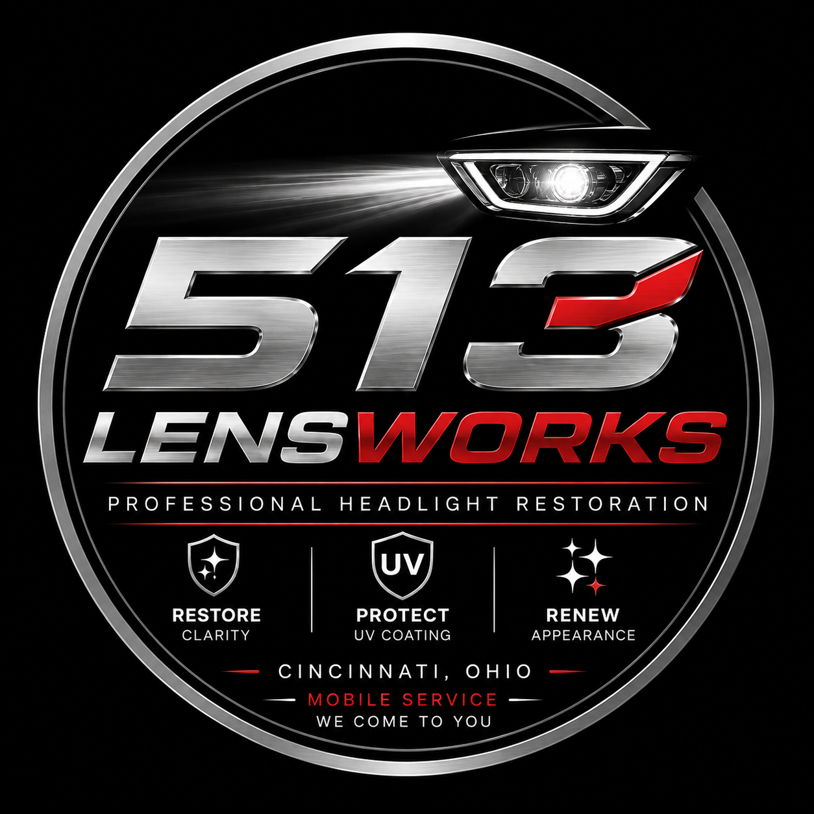
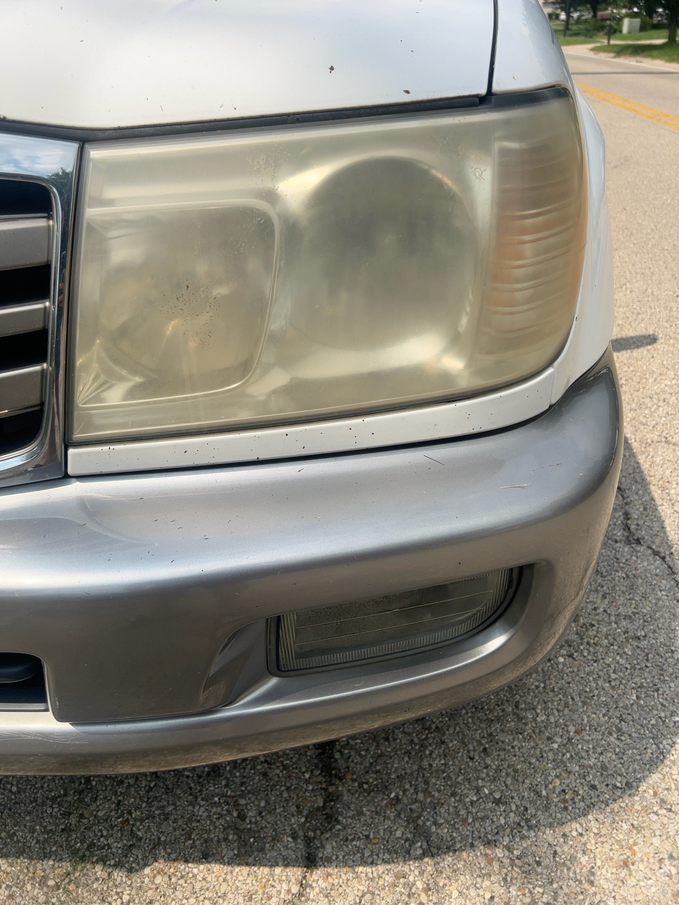
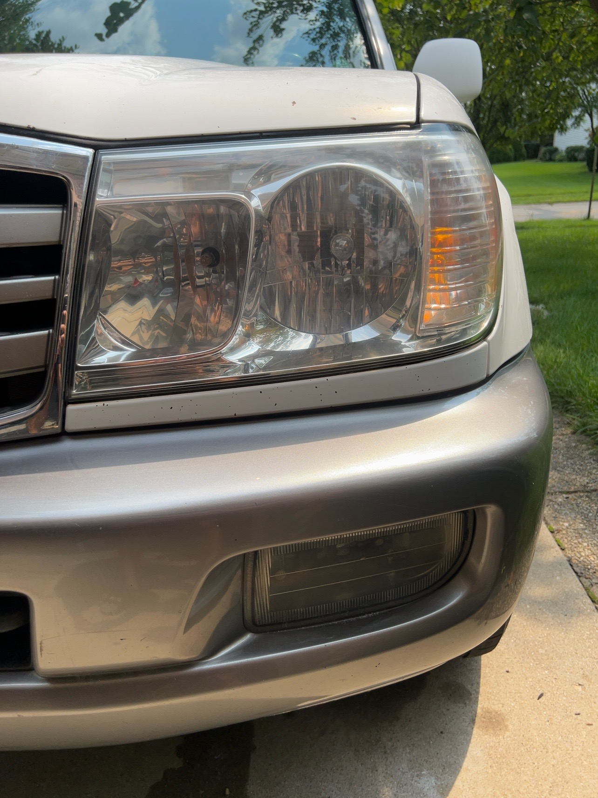
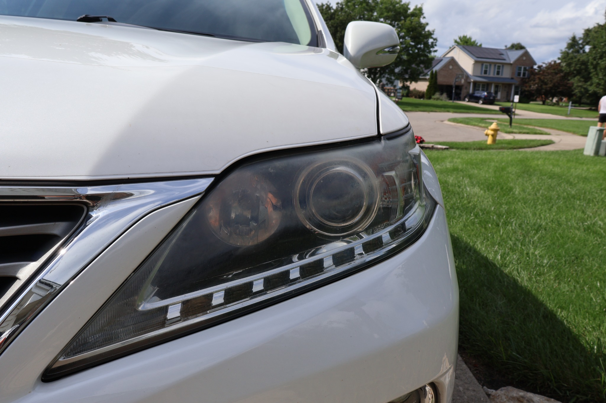
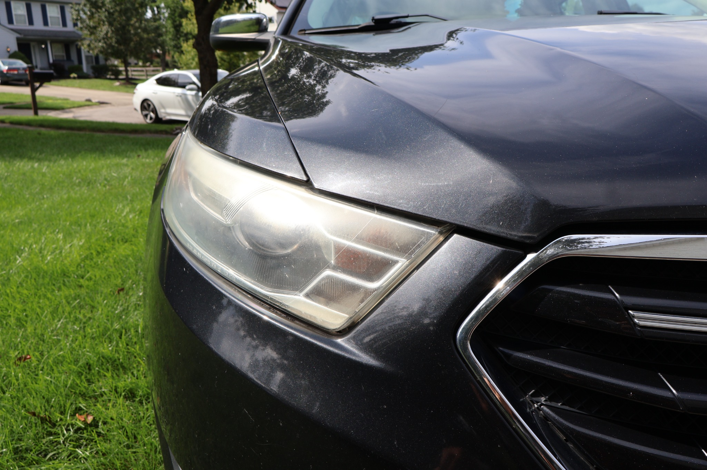
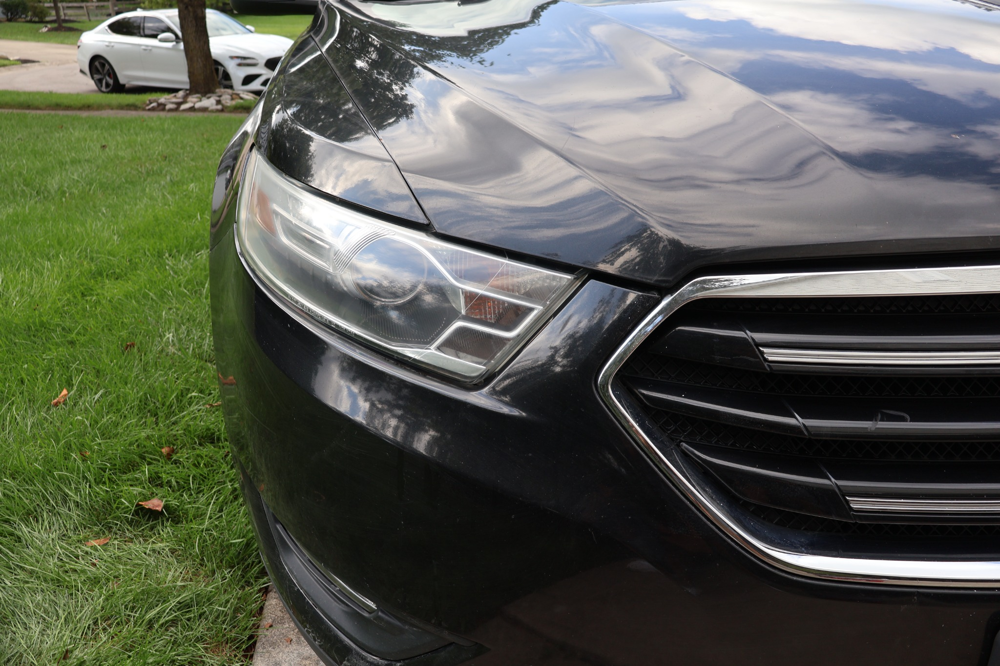
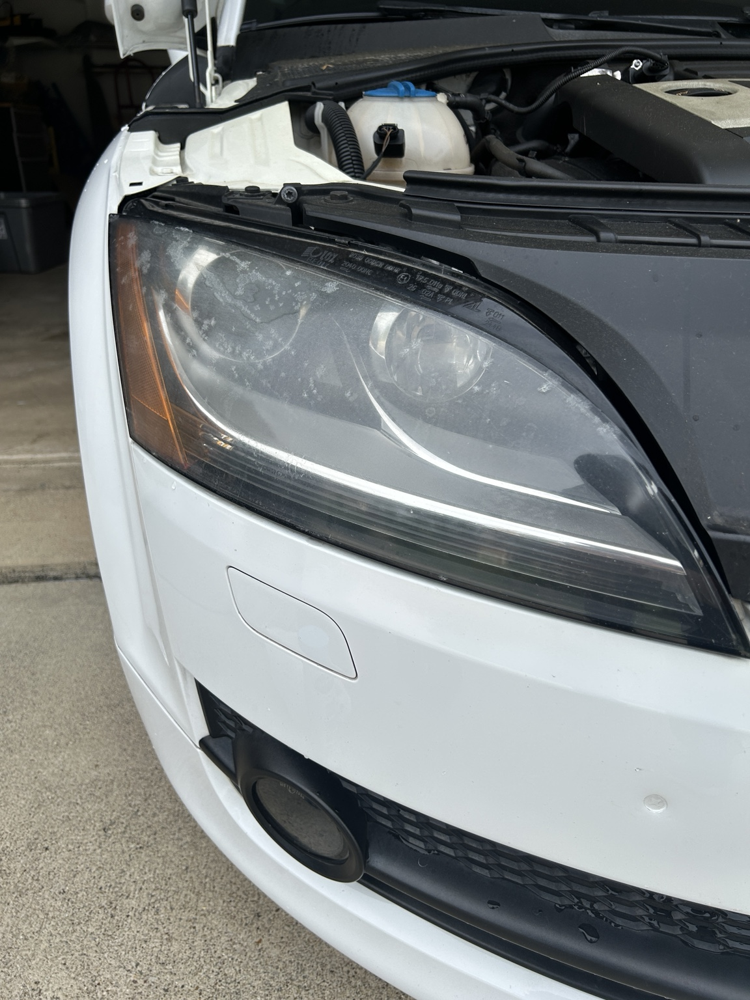
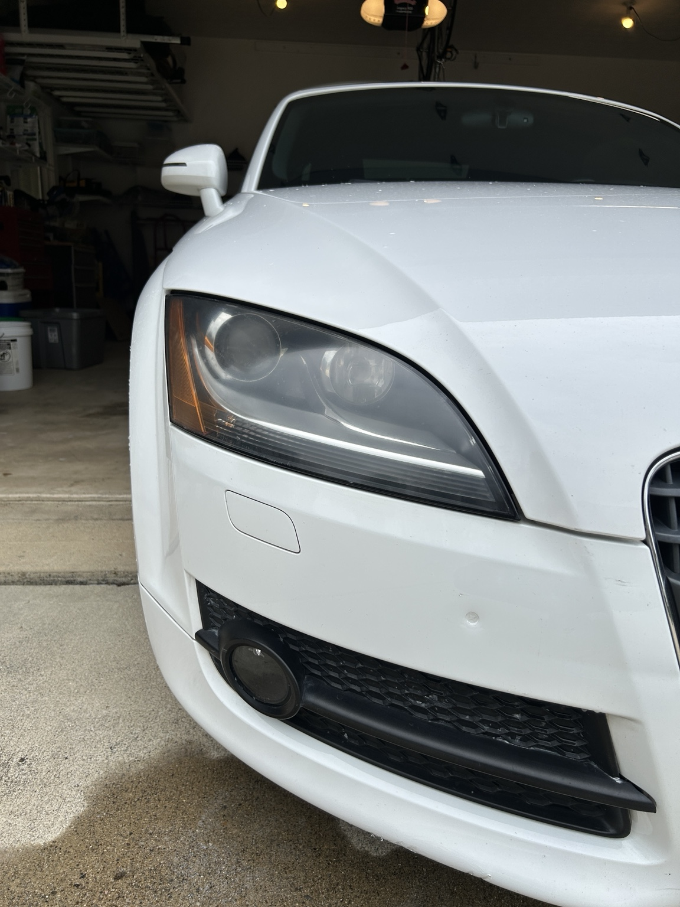
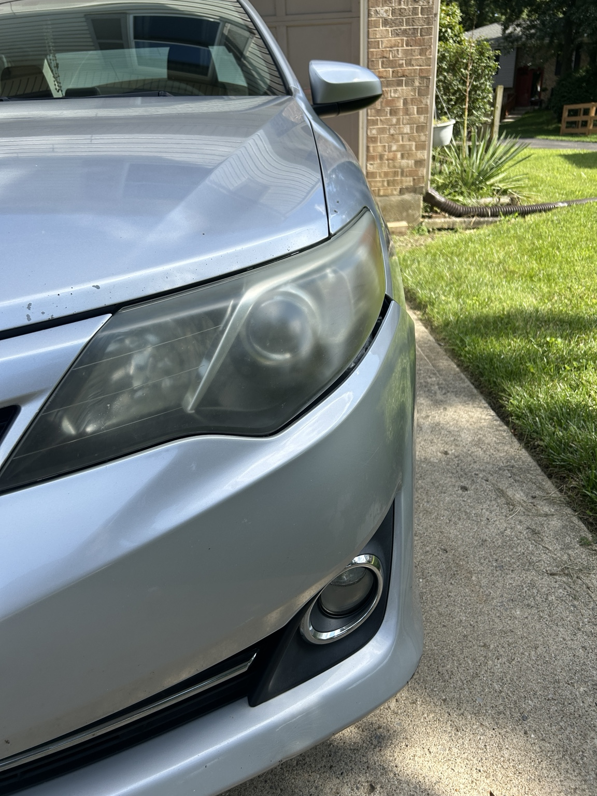
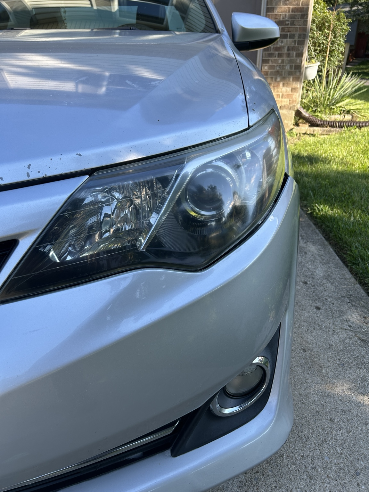

01
We Come to You
Mobile service means no shop visit. We can perform the restoration at your Mason home or workplace when conditions allow.
Mason, Ohio · Mobile Service
Cloudy, yellowed or oxidized headlights can make a vehicle look older and reduce lens clarity. 513 LensWorks provides mobile headlight restoration in Mason, bringing the service directly to your home or workplace.

Mobile service in Mason
Our restoration process is designed for exterior oxidation, yellowing, haze and failed surface coating. We remove damaged surface material with progressively finer abrasives, refine the lens, and finish it with a UV-protective clear coating.
Mobile service means no shop visit. We can perform the restoration at your Mason home or workplace when conditions allow.
Multi-stage sanding removes cloudy, yellowed and failed exterior material from the headlight lens.
The lens is progressively refined to create a consistent, clearer surface.
We finish the restored lens with a UV-protective clear coating to help protect the surface.
What to expect
Before starting, we inspect the headlights to determine whether the visible damage is on the exterior and appropriate for restoration. Internal moisture, internal lens damage and severe physical damage may require repair or replacement instead.
We inspect the lens, clean the work area and protect surrounding painted surfaces.
Oxidation and failed exterior coating are removed through multi-stage sanding.
Progressively finer abrasives create a consistent surface for the protective finish.
A UV-protective clear coating is applied to the restored exterior lens.
Real Results
Real before-and-after results from 513 LensWorks customers.

Before
AfterOxidation removed, clarity restored, and finished with UV protection.

Before After
AfterCloudiness reduced and clarity restored with UV protection.

Before
AfterHeavy haze removed for a cleaner, clearer appearance.

Before
AfterFailed coating and oxidation removed, then finished with UV protection.

Before
AfterHeavy oxidation removed, clarity restored, and finished with UV protection.
Mason headlight restoration FAQ
Yes. 513 LensWorks is a mobile service. We serve customers in Mason and surrounding communities within our service area.
Many headlights with exterior haze, yellowing, oxidation or failed coating can be restored. We inspect the lens before beginning because internal or physical damage may not be correctable through exterior restoration.
Yes. After the lens is restored and refined, we finish the exterior with a UV-protective clear coating.
Text 513-535-5151 with your vehicle information and a clear photo of the headlights. We can review their condition and discuss availability.
Headlight restoration in Mason, OH
Text your vehicle year, make and model along with a clear photo of the headlights. We'll review the condition and let you know about availability.